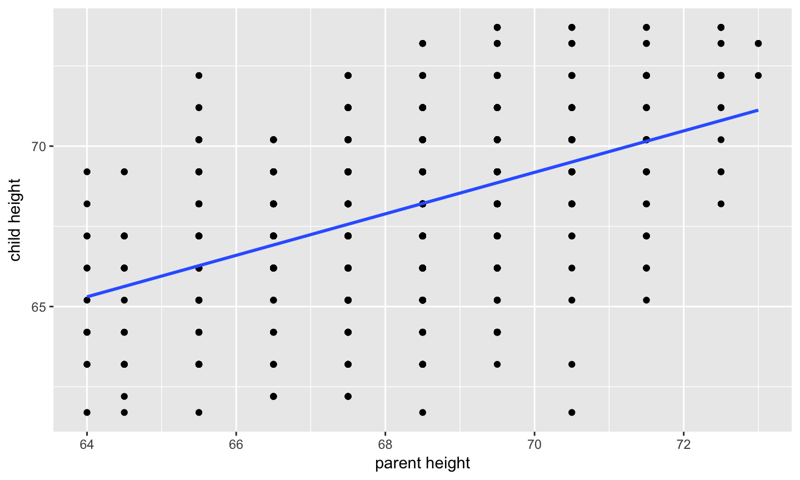
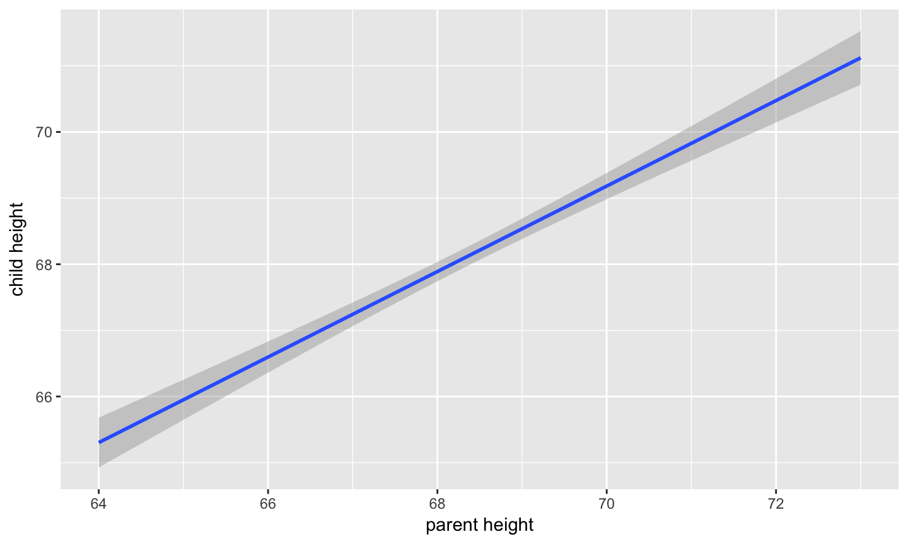
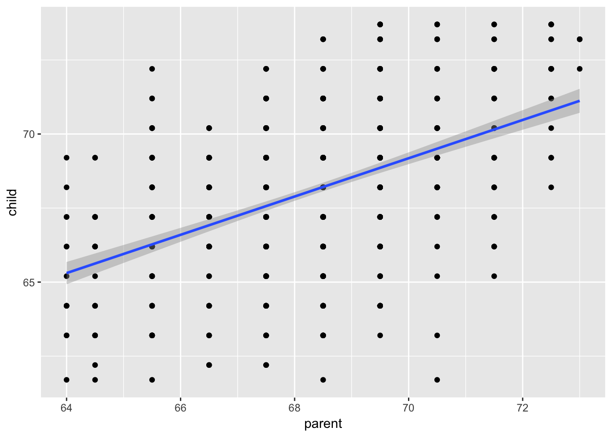

Functional relationship, ideally like a physical law
Uncovered through measurement
February 19, 2017
Functional relationship, ideally like a physical law
Uncovered through measurement

The regression of Y (DV) on X (IV) corresponds to the line that gives the mean value of Y corresponding to each possible value of X
"Our best guess"
\[ Y = b_{0} + b_{1}X +e \] \[ \hat{Y} = b_{0} + b_{1}X \] \[ \mu_{Y} = \beta_{0} + \beta_{1}X + \epsilon \]
\[ min\sum(Y_{i}-\hat{Y})^{2} \]
\[ b_{yx} = \frac{cov_{XY}}{s_{x}^{2}} = r_{xy} \frac{s_{y}}{s_{x}} \]
The slope equals the estimated change in Y for a 1-unit change in X
\[ Y = b_{1}^{*}X + e \] - Interpretation?
\[ \hat{Y} = \bar{Y} + r_{xy} \frac{s_{y}}{s_{x}}(X-\bar{X}) \] - if standardized, intercept drops out
- otherwise, intercept is where regression line crosses the y-axis at X = 0
fit.1 <- lm(parent ~ child, data = galton.data) summary(fit.1)
## ## Call: ## lm(formula = parent ~ child, data = galton.data) ## ## Residuals: ## Min 1Q Median 3Q Max ## -4.6702 -1.1702 -0.1471 1.1324 4.2722 ## ## Coefficients: ## Estimate Std. Error t value Pr(>|t|) ## (Intercept) 46.13535 1.41225 32.67 <2e-16 *** ## child 0.32565 0.02073 15.71 <2e-16 *** ## --- ## Signif. codes: 0 '***' 0.001 '**' 0.01 '*' 0.05 '.' 0.1 ' ' 1 ## ## Residual standard error: 1.589 on 926 degrees of freedom ## Multiple R-squared: 0.2105, Adjusted R-squared: 0.2096 ## F-statistic: 246.8 on 1 and 926 DF, p-value: < 2.2e-16
anova(fit.1)
## Analysis of Variance Table ## ## Response: parent ## Df Sum Sq Mean Sq F value Pr(>F) ## child 1 623.26 623.26 246.84 < 2.2e-16 *** ## Residuals 926 2338.10 2.52 ## --- ## Signif. codes: 0 '***' 0.001 '**' 0.01 '*' 0.05 '.' 0.1 ' ' 1
coefficients(fit.1) # coefficients residuals(fit.1) # residuals fitted.values(fit.1) # fitted values summary(fit.1)$r.squared # R-sq for the model summary(fit.1)$sigma # se of the model
The way R handles model objects is a little cumbersome as they are not data frames. You can see your output and maybe do some basic descriptives but you wont be able to do advanced manipulation
head(resid(fit.1))
## 1 2 3 4 5 6 ## 4.2721996 2.2721996 -0.7278004 -1.7278004 -2.2278004 1.1093758
If you want to use your model results/objects later on you (hint, we will) you need to turn them into an easier to use form
# broom package (found in the tidyverse package) library(broom) fit.1.data <- tidy(fit.1) #tidy turns the summary into a dataframe fit.1.data
## term estimate std.error statistic p.value ## 1 (Intercept) 46.1353499 1.4122473 32.66804 2.526465e-156 ## 2 child 0.3256475 0.0207272 15.71112 1.732509e-49
augment ammends the original dataset with all the lm objects. The names of the objects are different than a normal lm object, namely they have a "."" infront of the name
library(broom) galton.data.1 <- augment(fit.1, galton.data) head(galton.data.1)
## parent child .fitted .se.fit .resid .hat .sigma ## 1 70.5 61.7 66.22780 0.1423187 4.2721996 0.008021794 1.583599 ## 2 68.5 61.7 66.22780 0.1423187 2.2721996 0.008021794 1.588097 ## 3 65.5 61.7 66.22780 0.1423187 -0.7278004 0.008021794 1.589686 ## 4 64.5 61.7 66.22780 0.1423187 -1.7278004 0.008021794 1.588844 ## 5 64.0 61.7 66.22780 0.1423187 -2.2278004 0.008021794 1.588165 ## 6 67.5 62.2 66.39062 0.1327306 1.1093758 0.006977341 1.589446 ## .cooksd .std.resid ## 1 0.0294637423 2.6994436 ## 2 0.0083344662 1.4357182 ## 3 0.0008550854 -0.4598700 ## 4 0.0048191674 -1.0917327 ## 5 0.0080119350 -1.4076640 ## 6 0.0017244340 0.7006045
library(psych) describe(galton.data.1$.fitted)
## vars n mean sd median trimmed mad min max range skew ## X1 1 928 68.31 0.82 68.34 68.32 0.97 66.23 70.14 3.91 -0.09 ## kurtosis se ## X1 -0.35 0.03
describe(galton.data.1$parent)
## vars n mean sd median trimmed mad min max range skew kurtosis ## X1 1 928 68.31 1.79 68.5 68.32 1.48 64 73 9 -0.04 0.05 ## se ## X1 0.06
cor.test(galton.data.1$parent, galton.data.1$.fitted)
## ## Pearson's product-moment correlation ## ## data: galton.data.1$parent and galton.data.1$.fitted ## t = 15.711, df = 926, p-value < 2.2e-16 ## alternative hypothesis: true correlation is not equal to 0 ## 95 percent confidence interval: ## 0.4064067 0.5081153 ## sample estimates: ## cor ## 0.4587624
head(galton.data.1$.resid)
## [1] 4.2721996 2.2721996 -0.7278004 -1.7278004 -2.2278004 1.1093758
describe(galton.data.1$.resid)
## vars n mean sd median trimmed mad min max range skew kurtosis ## X1 1 928 0 1.59 -0.15 0.02 1.52 -4.67 4.27 8.94 -0.1 -0.17 ## se ## X1 0.05
describe(galton.data.1$parent)
## vars n mean sd median trimmed mad min max range skew kurtosis ## X1 1 928 68.31 1.79 68.5 68.32 1.48 64 73 9 -0.04 0.05 ## se ## X1 0.06
\[ Y = \hat{Y} + e\] \[ Y = \hat{Y} + (Y - \hat{Y}) \] \[ Y - \bar{Y} = (\hat{Y} -\bar{Y}) + (Y - \hat{Y}) \] \[ (Y - \bar{Y})^2 = [(\hat{Y} -\bar{Y}) + (Y - \hat{Y})]^2 \] \[ \sum (Y - \bar{Y})^2 = \sum (\hat{Y} -\bar{Y})^2 + \sum(Y - \hat{Y})^2 \]
\[ \sum (Y - \bar{Y})^2 = \sum (\hat{Y} -\bar{Y})^2 + \sum(Y - \hat{Y})^2 \]
\[ \sum (Y - \bar{Y})^2 = \sum (\hat{Y} -\bar{Y})^2 + \sum(Y - \hat{Y})^2 \] - SS total = SS between + SS within
Example.
t.test(traffic.risk ~ tx, data = ANOVA.example)
## ## Welch Two Sample t-test ## ## data: traffic.risk by tx ## t = 4.9088, df = 214.41, p-value = 1.814e-06 ## alternative hypothesis: true difference in means is not equal to 0 ## 95 percent confidence interval: ## 0.2879201 0.6742914 ## sample estimates: ## mean in group 0 mean in group 1 ## 2.650641 2.169535
model.1<- aov(traffic.risk ~ tx, data = ANOVA.example) summary(model.1)
## Df Sum Sq Mean Sq F value Pr(>F) ## tx 1 14.8 14.800 24.4 1.38e-06 *** ## Residuals 268 162.6 0.607 ## --- ## Signif. codes: 0 '***' 0.001 '**' 0.01 '*' 0.05 '.' 0.1 ' ' 1 ## 10 observations deleted due to missingness
model.2 <- lm(traffic.risk ~ tx, data = ANOVA.example) anova(model.2)
## Analysis of Variance Table ## ## Response: traffic.risk ## Df Sum Sq Mean Sq F value Pr(>F) ## tx 1 14.80 14.7999 24.398 1.381e-06 *** ## Residuals 268 162.57 0.6066 ## --- ## Signif. codes: 0 '***' 0.001 '**' 0.01 '*' 0.05 '.' 0.1 ' ' 1
model.2 <- lm(traffic.risk ~ tx, data = ANOVA.example) summary(model.2)
## ## Call: ## lm(formula = traffic.risk ~ tx, data = ANOVA.example) ## ## Residuals: ## Min 1Q Median 3Q Max ## -1.65064 -0.59811 -0.02668 0.54475 2.54475 ## ## Coefficients: ## Estimate Std. Error t value Pr(>|t|) ## (Intercept) 2.65064 0.07637 34.707 < 2e-16 *** ## tx -0.48111 0.09740 -4.939 1.38e-06 *** ## --- ## Signif. codes: 0 '***' 0.001 '**' 0.01 '*' 0.05 '.' 0.1 ' ' 1 ## ## Residual standard error: 0.7789 on 268 degrees of freedom ## (10 observations deleted due to missingness) ## Multiple R-squared: 0.08344, Adjusted R-squared: 0.08002 ## F-statistic: 24.4 on 1 and 268 DF, p-value: 1.381e-06
\[ \sum (Y - \bar{Y})^2 = \sum (\hat{Y} -\bar{Y})^2 + \sum(Y - \hat{Y})^2 \] \[ s_{y}^2 = s_{regression}^2 + s_{residual}^2 \] \[ 1 = \frac{s_{regression}^2}{s_{y}^2} + \frac{s_{residual}^2}{s_{y}^2} \]
\[ \frac{s_{regression}^2}{s_{y}^2} = \frac{SS_{regression}}{SS_{Y}} = R^2 \]
summary(fit.1)
## ## Call: ## lm(formula = parent ~ child, data = galton.data) ## ## Residuals: ## Min 1Q Median 3Q Max ## -4.6702 -1.1702 -0.1471 1.1324 4.2722 ## ## Coefficients: ## Estimate Std. Error t value Pr(>|t|) ## (Intercept) 46.13535 1.41225 32.67 <2e-16 *** ## child 0.32565 0.02073 15.71 <2e-16 *** ## --- ## Signif. codes: 0 '***' 0.001 '**' 0.01 '*' 0.05 '.' 0.1 ' ' 1 ## ## Residual standard error: 1.589 on 926 degrees of freedom ## Multiple R-squared: 0.2105, Adjusted R-squared: 0.2096 ## F-statistic: 246.8 on 1 and 926 DF, p-value: < 2.2e-16
cor.test(galton.data$parent, galton.data$child)
## ## Pearson's product-moment correlation ## ## data: galton.data$parent and galton.data$child ## t = 15.711, df = 926, p-value < 2.2e-16 ## alternative hypothesis: true correlation is not equal to 0 ## 95 percent confidence interval: ## 0.4064067 0.5081153 ## sample estimates: ## cor ## 0.4587624
## Analysis of Variance Table ## ## Response: parent ## Df Sum Sq Mean Sq F value Pr(>F) ## child 1 623.26 623.26 246.84 < 2.2e-16 *** ## Residuals 926 2338.10 2.52 ## --- ## Signif. codes: 0 '***' 0.001 '**' 0.01 '*' 0.05 '.' 0.1 ' ' 1
\[ \frac{SS_{regression}}{SS_{Y}} = R^2 \] \[ {SS_{regression}} = R^2({SS_{Y})} \] \[ {SS_{residual}} = SS_{Y} - R^2({SS_{Y})} \]
\[ {SS_{residual}} = (1- R^2){SS_{Y}} \]
MSE = 2.52
## ## Call: ## lm(formula = parent ~ child, data = galton.data) ## ## Residuals: ## Min 1Q Median 3Q Max ## -4.6702 -1.1702 -0.1471 1.1324 4.2722 ## ## Coefficients: ## Estimate Std. Error t value Pr(>|t|) ## (Intercept) 46.13535 1.41225 32.67 <2e-16 *** ## child 0.32565 0.02073 15.71 <2e-16 *** ## --- ## Signif. codes: 0 '***' 0.001 '**' 0.01 '*' 0.05 '.' 0.1 ' ' 1 ## ## Residual standard error: 1.589 on 926 degrees of freedom ## Multiple R-squared: 0.2105, Adjusted R-squared: 0.2096 ## F-statistic: 246.8 on 1 and 926 DF, p-value: < 2.2e-16
describe(galton.data$parent)
## vars n mean sd median trimmed mad min max range skew kurtosis ## X1 1 928 68.31 1.79 68.5 68.32 1.48 64 73 9 -0.04 0.05 ## se ## X1 0.06
aka standard error of the estimate
(note df might be off slightly because of unbiasing)
head(galton.data.1)
## parent child .fitted .se.fit .resid .hat .sigma ## 1 70.5 61.7 66.22780 0.1423187 4.2721996 0.008021794 1.583599 ## 2 68.5 61.7 66.22780 0.1423187 2.2721996 0.008021794 1.588097 ## 3 65.5 61.7 66.22780 0.1423187 -0.7278004 0.008021794 1.589686 ## 4 64.5 61.7 66.22780 0.1423187 -1.7278004 0.008021794 1.588844 ## 5 64.0 61.7 66.22780 0.1423187 -2.2278004 0.008021794 1.588165 ## 6 67.5 62.2 66.39062 0.1327306 1.1093758 0.006977341 1.589446 ## .cooksd .std.resid ## 1 0.0294637423 2.6994436 ## 2 0.0083344662 1.4357182 ## 3 0.0008550854 -0.4598700 ## 4 0.0048191674 -1.0917327 ## 5 0.0080119350 -1.4076640 ## 6 0.0017244340 0.7006045
describe(galton.data.1$.resid)
## vars n mean sd median trimmed mad min max range skew kurtosis ## X1 1 928 0 1.59 -0.15 0.02 1.52 -4.67 4.27 8.94 -0.1 -0.17 ## se ## X1 0.05
\[ H_{0}: \rho_{XY}^2= 0 \] \[ H_{1}: \rho_{XY}^2 \neq 0 \]
\[ F = \frac{MS_{regression}}{MS_{residial}} \]
\[ H_{0}: \beta_{XY}= 0 \] \[ H_{1}: \beta_{XY} \neq 0 \]
\[ se_{b} = \frac{s_{Y}}{s_{X}}{\sqrt{\frac {1-r_{xy}^2}{n-2}}} \] \[ t(n-2) = \frac{b_{yx}}{se_{b}} \] ** what is standardized equation?


\[ \hat{Y}\pm t_{critical} * se_{residual}\sqrt{\frac {1}{n}+\frac{(X-\bar{X})^2}{(n-1)s_{X}^2}} \]